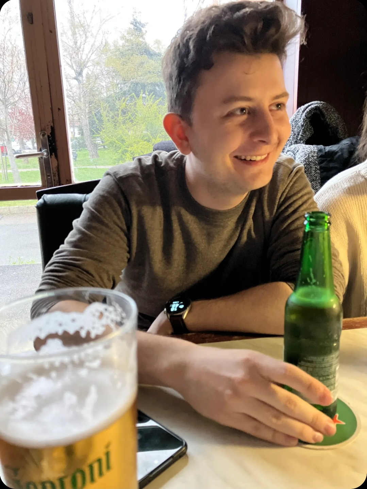

Summary

My name is Sándor Bence. I graduated as a mechatronical engineer Bsc. and mechanical engineer Msc. I currently work as a software engineer. In my freetime I like to play video games, do some 3D modelling and printing and recently I got into bonsai.
Education
- 2021-2023: Mechanical engineering (materials science) at BME, Budapest
- 2016-2020: Mechatronics engineering (opto-mechatronics) at BME, Budapest
- 2008-2016: Highschool at Török Ignác Gimnázium, Gödöllő
- 2004-2008: Elementary school at Fabriczius József Általános Iskola, Veresegyház
Work Experience
- 2023.02-: Software engineer at Bosch, Budapest
- 2020.06-2022.12: Mechanical design engineer at Mirrotron Kft., Budapest
- 2019.07-2019.08: Labview developer trainee at Knorr-Bremse, Budapest
Skills
- CAD design (Solidworks, Inventor): ⭐⭐⭐⭐⭐
- C# development: ⭐⭐⭐
Languages